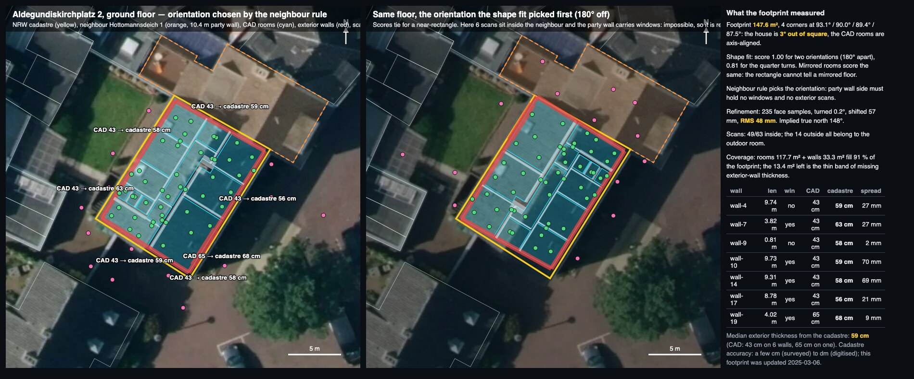
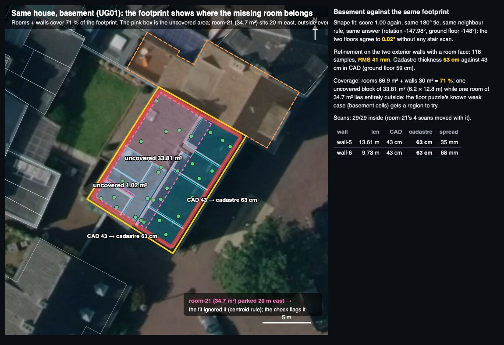

Verdict
Milton’s hunch is right, and the strongest use is not in sorting. The footprint is the only outside face we have for exterior walls. Today the wall thickness review marks every exterior wall “uncertain, one side only”, “Create boundary walls” gives them the slab offset (40 cm by default), and the delivery check cannot tell that a wall band or a whole room is missing. The cadastre line fixes all three with one geometric fact, and it already sits in the building as an annotation.
Ranked by value for the 2D north star, with the evidence on this page:
- Exterior wall thickness as a second face in the wall thickness review (and Marvin’s
inspect_wall_thickness_evidence, which reads the same collector). Aldegundis: 59 cm ground floor, 63 cm basement, CAD says 43 cm. - Ground-floor slab outline = footprint instead of rooms + 40 cm. Because the wall generator takes the slab as the outer face, every generated exterior wall then gets its true thickness per facade for free. On Aldegundis the missing band is 13 m² of wall.
- Delivery check: “rooms and walls cover the footprint” and “no room outside it”. Catches a parked room, a corrupt vertex 1.58 km away (the Hohental EG00 case), and unmeasured areas.
- Orientation and north: the neighbour’s footprint resolves the 180° tie that a near-rectangle always leaves (the party wall side can hold neither windows nor exterior scans). Both floors agree to 0.02°. Mirrored floors are not detectable from a rectangle; that was measured too.
- Exterior scan and outdoor room classification, out-of-square warning (this house is 3° off 90°), party-wall type, BGF cross-check, address in the title block, true georeferencing later.
- Floor puzzle prior (main priority): built as three score terms and two search moves in a scratch copy of the solver. On the failing basement the footprint makes the true layout the best-scoring one, which it was not before; the greedy search does not reach it yet. Verified only with synthetic rays on real geometry, and the synthetic harness is not representative (the ground floor fails in it too). One real floor export decides. Details in the puzzle section.
What exists today (checked in code)
Storage. One IfcAnnotation per building, objectType and property buildingOutlineReference, deterministic id. It holds ringsMm (outer ring plus courtyards, east/north millimetres of the search frame), positionMm, rotationDegrees and the full source (provider, source id, geographic origin, address, retrieval date). referenceWorldRings() gives the rings in model millimetres. Saved through data.save with undo and redo. Files: src/lumocad/features/buildingContext/{types,store,persistence}.ts, utils/reference.ts.
Placement. utils/autoFit.ts lines the outline’s dominant edge direction up with the rooms’ (or the ground-floor slab’s), centres it on their extent, and scores the four quarter turns by how much of the room outline falls inside; ties go to north. utils/roomSegments.ts picks the ground-floor slab as the anchor. “Use outline north” saves true north. Nothing else reads the outline: no wall, slab, check or Marvin tool.
Sources. Five state cadastres (NRW, Berlin, Hamburg, Brandenburg, Sachsen) plus OpenStreetMap as fallback (src/pages/AreaTool/utils/cadastres.ts). Berlin, Hamburg and Brandenburg also give the storey count. Lower Saxony (Hohental!) is not in the registry yet, but its open WFS answers the same ave:GebaeudeBauwerk schema as NRW, in EPSG:4326, under CC BY 4.0 (checked 12 Nov: https://opendata.lgln.niedersachsen.de/doorman/noauth/alkis_wfs_einfach). Adding it is one registry entry.
Measured: Aldegundiskirchplatz 2 against the NRW cadastre
Why this building: it is the held-back opening benchmark (copy a9c5fdee with prod scan poses), it is in NRW, and its ground floor and basement are on disk as fixtures with rooms, walls (thickness, exterior flag), scans and openings. The CAD walls here were drawn by a person; they are not generator output. Nothing was written to the building.
What ran (script in the gitignored src/lumocad/lab/scripts/scratch/outline-research-alde.test.ts, using the shipped parseCadastre, createReference, autoFitReference and dominantDirection):
- Fetch the cadastre around the address (106 buildings in an 80 m box, 0.3 s). The building is a 4-vertex polygon, 147.6 m², perimeter 49.2 m, last changed 2025-03-06. One neighbour, Hottomannsdeich 1, shares a 10.4 m edge.
- Run the shipped auto-fit against the fixture rooms. Score all four quarter turns, and the same with the rooms mirrored.
- Decide the 180° tie with a neighbour rule: the side where a neighbour touches can carry neither windows nor exterior scans.
- Refine: a small rigid fit of the exterior walls’ room faces onto the footprint, inset by one common thickness solved as the median gap (25 iterations, only edges parallel within 10°). Then read the gap per wall.
- Raster the footprint at 10 cm: which cells are covered by a room or a wall, which are not, which scans and rooms lie outside.

Ground floor (EG00): 13 rooms, 22 walls, 63 scans
| Question | Answer | What it means |
|---|---|---|
| Is the footprint a rectangle? | corners 93.1° / 90.0° / 89.4° / 87.5° | The house is 3° out of square. The CAD rooms are axis-aligned to 0.2°. The footprint tells us this before any room is puzzled. |
| Shape fit | 1.00 at two orientations 180° apart; 0.81 at the quarter turns | Direction found; the flip is undecidable from shape alone, as autoFit already says in its panel text. |
| Mirrored floor | same scores | A rectangle cannot reveal a mirrored floor; neither can the neighbour rule here, because the mirror axis is perpendicular to the party wall. Honest negative. |
| Neighbour rule | first choice: 6 scans in the neighbour, windows on the party wall · flipped: 0 conflicts | Decides the flip deterministically. Also: every wall with a window is an exterior wall, and the only long exterior wall without windows is the party wall. |
| Refinement | turned 0.20°, shifted 57 mm, RMS 48 mm over 235 face samples | The cadastre line and the hand-drawn CAD walls agree at the 5 cm level once the thickness is free. True north from the outline: 148°, to a fraction of a degree. |
| Scans | 49 of 63 inside; all 14 outside belong to the outdoor room | “Origin outside the footprint” is a clean outdoor-scan classifier on this floor. |
| Coverage | rooms 117.7 m² + walls 33.3 m² = 91 %; 13.4 m² uncovered as thin strips | The uncovered area is the band of exterior wall thickness that the CAD walls lack. |
| Exterior wall | Length | Window | CAD thickness | Cadastre thickness | Spread along the wall |
|---|---|---|---|---|---|
| wall-4 (party wall) | 9.74 m | no | 43 cm | 59 cm | 27 mm |
| wall-7 | 3.82 m | yes | 43 cm | 63 cm | 27 mm |
| wall-9 | 0.81 m | no | 43 cm | 58 cm | 2 mm |
| wall-10 | 9.73 m | yes | 43 cm | 59 cm | 70 mm |
| wall-14 | 9.31 m | yes | 43 cm | 58 cm | 69 mm |
| wall-17 | 8.78 m | yes | 43 cm | 56 cm | 21 mm |
| wall-19 | 4.02 m | yes | 65 cm | 68 cm | 9 mm |

Basement (UG01): 8 rooms, 16 walls, 29 scans
- The shipped auto-fit fails on this floor as is (score 0.04): it centres on the extent of all rooms, and room-21 sits 20 m away. Excluding rooms whose centroid is more than ¾ of a footprint diagonal from the median centroid fixes it (score 1.00). The fit needs that robustness in any case.
- Neighbour rule: same decision as the ground floor, rotation −147.98° against −148.00°. Two floors registered to each other through the footprint alone, with no stair scan.
- Refinement on the two exterior walls that have a room face: 118 samples, RMS 41 mm, cadastre thickness 63 cm against 43 cm CAD.
- Coverage 71 %. The uncovered block (33.8 m²) and the parked room (34.7 m²) match. The floor-puzzle README names basement cells as its failing case because “rooms in such floors need information the scans don’t hold”. This is that information.
Where it plugs in, with the exact places
All paths under src/lumocad/ on agentic-dev. Effort is an estimate for the first working version with tests, not a promise. “Stage” says which part of the 2D pipeline the change belongs to.
| # | Use | Stage | Where exactly | Effort | Evidence here |
|---|---|---|---|---|---|
| 1 | Second face for exterior wall thickness. Add the footprint edges as review edges with a synthetic room id (footprint) and an origin outside the wall; the existing far-face search then finds them. | architect layer | features/wallThicknessReview/utils/collect.ts:46-80 (push into readStoreySources), faces.ts:90,113 (onRoomSide, findReviewFace), assess.ts:42-45 (today: uncertain / one-side; same-room rule needs the distinct id). Marvin’s inspect_wall_thickness_evidence uses the same collector, so no Go change. | 1–2 d | 59 cm / 63 cm vs 43 cm; RMS 48 / 41 mm |
| 2 | Ground-floor slab from the footprint, then “Create boundary walls” gives each facade its measured thickness (the generator defines exterior thickness as slab-to-room-face distance). Upper floors: offer the footprint when the level’s rooms fit it; warn when they don’t (setbacks, overhangs). | architect layer | utils/geometry/slabBoundaryFromSpaces.ts:229-241 (replace or intersect the offset union), constants/slabBoundaryFromSpaces.ts:1 (40 cm), features/assistant/editorOps/slab.ts:64,75 (plan + “assumed offset” warning), utils/geometry/boundaryExternalWallMatching.ts:80,169 (facades from the slab, thickness from the distance), boundaryExternalWallPreview.ts:74,164 (median fallback for unsupported spans). Also utils/reconstruction/reconstructionBoundaryStages.ts:149 hard-codes 20 cm. | 2–3 d | 13 m² missing wall band; 7/7 facades parallel to the footprint within 0.4° |
| 3 | Delivery check: footprint.coverage (rooms + walls cover ≥ 95 % of the footprint, no uncovered block over 2 m²) and rooms.insideFootprint; both review class, applicable only when an outline is placed. | architect layer | utils/floorplan/floorPlanDeliveryCheck.ts:28-51 (id union), :163-187 (CHECKS), computed case after :296; input via features/assistant/planIssues/service.ts:206-229. Closest existing rule: roomsExceedSlab at prepareFloorPlanStorey.ts:481-491. | 1 d | parked room 34.7 m² + 33.8 m² hole; Hohental 1.58 km vertex would fail it |
| 4 | Orientation by the neighbour rule in the auto-fit: when quarter turns tie, count exterior scans inside any neighbour and windows on walls that coincide with a shared edge; pick the orientation with zero conflicts, else keep the panel’s tie text. Store the neighbour rings with the reference (they are in the same WFS answer). | placement | features/buildingContext/utils/autoFit.ts:112-146 (equallyGood), persistence.ts:118-126 (fitDraftToModel), types.ts:5 (add neighbourRingsMm), src/pages/AreaTool/utils/area.ts:25 (sameBuildingIds already groups parts). | 1 d | 7 vs 0 conflicts on both floors |
| 5 | Robust fit anchor: centre on the median room centroid, drop rooms farther than ¾ diagonal, fall back to scan origins when no room exists yet (Milton’s point: the outline usually comes before rooms). | placement | features/buildingContext/utils/roomSegments.ts:60-78 (fitAnchor), autoFit.ts:95-101 (centred). | 0.5 d | UG01 fit 0.04 → 1.00 |
| 6 | Exterior scan / outdoor room: a scan origin outside the footprint is an outdoor scan; a room whose scans are all outside is an outdoor room. Add an outside-footprint placement anomaly. | sorting | utils/geometry/roomPlacementAnomalies.ts:13 + types/roomPlacementAnomalies.ts:48; consumers analysis/health/roomPlacementChecks.ts:24, lab/roomRigidPlacementReview.ts:26; outside flag in utils/alignment/runners/floorPuzzleRunner.ts:119. | 0.5 d | 14/14 outdoor, 0/78 indoor misclassified |
| 7 | Out-of-square warning: corner angles of the footprint tell the boundary fitter and the straightener that this building is not 90°. Feed the footprint’s edge directions as the reference directions the v2 boundary fit already accepts. | architect layer | components/UI/Toolbar/ViewToolbars/TopViewToolbarCad.tsx:913 (reference directions into fit-line-intersections), features/assistant/editorOps/service.ts:474 (Marvin still sends v1 without them). | 0.5 d | 3° on Aldegundis; rooms drawn at 0.2° |
| 8 | Party wall type: a footprint edge shared with a neighbour is a shared wall: propose the wall type, expect no windows, no exterior scans. | architect layer | Organize wall types (features/wallThicknessReview) suggestion path; neighbour rings from #4. | 1 d | wall-4: 9.7 m, no windows, 10.4 m shared edge |
| 9 | BGF cross-check: ground-floor DIN 277 gross area vs footprint area; warn above 5 %. Never a silent fallback (the plan refuses to guess by design). | plan output | utils/floorplan/slabArea.ts:37-40, printed by floorPlanSheetBlocks.ts:610; New Building estimator already uses footprint × floors. | 0.5 d | 147.6 m² footprint vs 117.7 + 33.3 m² |
| 10 | Address and georeference: title block address from source.address; true north already saved. Later: the reference gives a model→EPSG transform for DXF/IFC, nothing in the exporters is georeferenced today. | plan output | utils/floorplan/floorPlanSheetBlocks.ts:86,594 (projectAddress); no EPSG anywhere under utils/export, utils/floorplan, utils/ifc. | 0.5 d / later | north 148° from the outline |
| 11 | Marvin: read tool inspect_building_outline (rings, area, corner angles, neighbours, per-level coverage, rooms and scans outside, thickness per facade) and a footprint step in the next-step planner before slab, routed to #2 and #4. Deterministic, no model guessing. | Marvin | features/assistant/floorDelivery/steps.ts (FLOOR_FIX_STEPS), service.ts planners; marvin repo floor_fix_tools.go / plan_tools.go (protocol bump). | 2 d | everything above is a pure function of the stored annotation |
| 12 | Lower Saxony cadastre so Hohental, the golden building, gets an official outline instead of OpenStreetMap (which sits ~4 m off on average, see literature). | source | src/pages/AreaTool/utils/cadastres.ts registry: URL above, layer ave:GebaeudeBauwerk, reader readVereinfacht, credit “LGLN (2026) CC BY 4.0”. | 0.5 d | GetCapabilities checked 12 Nov; Hohental’s address is needed from the DB to test |
Sorting and puzzling: where a footprint prior would go
Sorting and puzzling are the main priority (Milton, 12 Nov), and the outline was asked for as the start of puzzling. These are the places a prior fits in the existing code. The main structural fact: the storey autosort never places rooms relative to each other. It sorts scans inside one room (grid correlation, ±7 m search, IMU quarter-turn), then spreadAllElements lays rooms on a 10 m grid. Rooms meet each other only in the floor puzzle.
| Place | What the footprint adds | Where |
|---|---|---|
| Floor puzzle scorer | An exterior raster layer (penalise own walls or core free space outside the footprint) and a facadeBand layer (reward outward wall points on the footprint edge), like the existing wall bands. Needs the anchor registered to the footprint, or the footprint as a fixed pseudo-room. Policy note: scanPuzzle/service.ts:23 says “no previous outline enters the solver”; the cadastre is not a previous outline, but the exception should be written down. | utils/alignment/floorPuzzle/floorPuzzle.ts assemble :934-939, packAssembly :704-730, scorerAt :821-840, hard gate next to connectionFits :1082 used at :1039 and :963 |
| Coarse grid and frame | Take the 256² grid span from the footprint box instead of room areas; place the solved floor into the footprint pose; use the footprint direction instead of the axis snap. | :891, ensembleMoves :1300-1309, alignRotation :1415-1435, rotationIndices :911-917 |
| Confidence | Drop alternatives that fall outside the footprint before computing confidence; the README’s “tiny symmetric rooms” limit shrinks. | :1162-1182 |
| Basements | The README’s failing case (UG01, 6 of 15 dependable rooms wrong). The uncovered block is a region to search; room-21’s 34.7 m² matches the 33.8 m² hole. | README_FLOOR_PUZZLE_CALVINTOOL.md “Results” |
| Autosort layout | Seed rooms inside the footprint instead of the 10 m grid. | utils/alignment/storeyAutosortMainThread.ts:96-126 → utils/layout/spreadAllElements.ts:16 |
| IMU quarter turn | With true north and the footprint rotation the model-axis rotation is absolute, so the compass choice becomes a cross-check (the compass can be 10°+ off, the 30° cluster tolerance hides it). | utils/alignment/imuRoomInitialization.ts:195-227,244-267 |
| Edge alignment / room links | Footprint edges as heavily weighted SpaceWorldEdges so exterior walls snap to the facade minus thickness; footprint exterior as a pseudo-neighbour for points seen beyond a wall. | utils/alignment/roomEdgeAlignment.ts:417-429,370, roomLinkSelection.ts:44-49 |
| Floor-to-floor | Every floor fits the same footprint, so floors register to each other without stair scans (0.02° here). Reuse the bounded floor registration. | utils/alignment/floorPuzzle/floorRegistration.ts (25–500 mm, 0.25–4.5°) |
| Window walls | Every wall with a window is an exterior wall on this floor (5/5), and the only long exterior wall without one is the party wall. Window masks per room say which room edge must lie on the footprint. Noted, not used: the puzzle’s “nothing outside a window” layer is at weight 0 because the true floor broke it 1000+ times; this rule is about the wall, not the view. | floorPuzzle.ts layers :580-598 |
Floor puzzle: built and measured (same day)
Target: the floor puzzle’s own failing case. Its README reports Aldegundis UG01 (basement storage cells) as “do not use”: 6 of 15 dependable rooms wrong, every restart agreeing on a compact wrong arrangement that scores higher than the truth (2660 against 1780), because “rooms in such floors need information the scans don’t hold”. The footprint is such information, and it is the same building this page already placed the footprint on.
What was built (scratch, nothing in the repo changed)
src/lumocad/lab/scripts/scratch/floorPuzzleFootprint.ts: a copy ofutils/alignment/floorPuzzle/floorPuzzle.tswith afootprintoption (outer ring, courtyards, neighbouring buildings, in the anchor room’s input frame, carried into the solver frame by the anchor’s transform and moved with each ensemble restart). It adds one static layer per grid,exterior, and facade bands, and three score terms that cost no extra FFT because they fold into the five existing correlation products:exteriorConflict(a room’s own points and core free space outside the footprint, packed into the own and free products),facade(a room wall whose outward normal matches a footprint edge, 25–80 cm inside that edge, packed into the existing neighbour-band product with its own weight), andwindowOutside(the region beyond a window wall landing outside the footprint).- Two search moves after the repair sweeps (
extraMoves): pairwise swaps of similar-sized rooms (the “look-alike cells permuted” failure) and “hole filling” (try each uncovered block of the footprint as a start for a room), both kept only when the floor total improves. footprint-puzzle-bench.test.ts(ensemble benchmark, scrambled floor with the anchor kept, with and without the footprint, real export or synthetic input),footprint-puzzle-diag.test.ts(score of the true layout against the solver’s layout, per term),footprint-puzzle-lib.ts(loaders). Synthetic input: real room rings, real scan positions, real door and window positions from the held-back fixtures; 0.5° rays from each scan, rays continue through doors into the neighbouring room, 15 mm noise, door-frame and window tags.
Measured on the basement (synthetic rays on real geometry)
| Run | True layout total | Solver’s layout total | Wrong rooms (of 5) | Reading |
|---|---|---|---|---|
| Without footprint | 1623 | 2029 | 4, two of them outside the footprint | The wrong layout scores higher than the truth: the README’s complaint, reproduced. |
| Without footprint, polish from the truth | 1808 | 2029 | 0 (it stays) | Even polished, the truth loses. A better search alone would converge on the wrong answer. |
| With footprint, facade 0.6, window 0 | 3452 | 3270 | 4, all inside the footprint | The truth is now the better layout. Facade band: truth 9438 vs 8432. The greedy search does not reach it. |
| With footprint, polish from the truth | 3629 | 3270 | 0 | The truth is a stable optimum under the footprint terms, 11 % above the solver’s layout. |
| With footprint + wider search (repair 8, shortlist 12) or + swap/hole moves | 3452 | 3264–3270 | 4 | Local moves do not get there: the layout is wrong in several rooms at once, and no single move improves the total. |
| Facade weight sweep 0.3 / 0.6 / 1.0 / 1.5 | 2538 / 3452 / 4671 / 6195 | 2314 / 3270 / 4651 / 6364 | 4 each | Truth ahead at 0.3–1.0, behind at 1.5: the band must support, not dominate. 0.6 chosen. |
| Window-outside term at 0.5 (first try) | 9488 | 10386 | 3 | Miscalibrated: the solver marches 1.5 m beyond every window point (≈14k cells), so it rewards wrong placements more. Set to 0. |
Ensemble benchmark, basement, 2 scrambles each: without the footprint 7 of 12 room placements were proposed as dependable and 5 of those were wrong; with the footprint 4 proposed, 1 wrong. Fewer, more honest proposals, but the floor is still not solved.
What decides it: one real export
The solver benchmark takes a floor export from Calvin, which needs the floor open in LumoCad with its scans loaded. Milton, on the Aldegundis copy a9c5fdee, basement open (and the ground floor afterwards):
pnpm calvin tool floor-export '{"floor":"UG01","file":"floor-export-ug01.json"}'
pnpm calvin tool floor-export '{"floor":"EG00","file":"floor-export-eg00.json"}'
# then, with the printed path:
FP_EXPORT=artifacts/calvin-sessions/<session>/lab/floor-export-ug01.json FP_FLOORS=ug01 FP_SEEDS=3 FP_FACADE=0.6 FP_MOVES=1 \
NODE_ENV=test rtk proxy npx vitest run src/lumocad/lab/scripts/scratch/footprint-puzzle-bench.test.tsThe footprint placement for that frame comes from this page’s measurement (/tmp/outline-research/alde-results.json, same building copy, same model frame as the 10 Nov fixtures); if rooms moved since, pass FP_FOOTPRINT_JSON with the rings in model millimetres. Or say the word and I run the export through Calvin on your open tab.
If the real clouds confirm the scoring effect
- Footprint-first search instead of local moves: correlate every room against the footprint layers alone (facade bands + exterior) to get its candidate slots along the facades, then a small beam search over room-to-slot assignments scored with the full pairwise terms. The basement has 6 rooms and perhaps 8 slots × 4 rotations: cheap. This is the search the diagnostic says is missing.
- Port the terms into
utils/alignment/floorPuzzle/floorPuzzle.tsbehind thefootprintoption (they are additive and zero without a footprint), pass the placed outline fromfloorPuzzleRunner.tsandscanPuzzle/service.ts(with the written policy exception), and add the outline to the candidate digest so a moved outline invalidates old candidates. - Keep the dependability rule as is: on the basement the footprint already cut wrong proposals from 5 of 7 to 1 of 4.
Caveats, so nobody over-trusts the line
- One building, two floors. Everything above is measured on Aldegundis. Hohental (Lower Saxony, needs #12 and the address) and one Berlin building (storey count,
bezdescapture-method flag) should follow before any rule is made a blocker. - Cadastre accuracy is “as good as the survey”: a few centimetres where the building was surveyed numerically, several decimetres where it was digitised from old maps. NRW gives no quality flag; Berlin does. The 48 mm RMS here is internal consistency, not a guarantee. Use the footprint for class decisions (24 / 36.5 / 49 / 60 cm) and warnings, not for millimetres.
- The footprint is the ground-level outer face. Plinths, cladding, cantilevered upper floors, setbacks and basements that extend under the yard all differ from it. Overhanging parts (“Bauteil”, canopies) are separate cadastre features that the Area Tool skips on purpose. The basement here agreed to 4 cm, but that is one case.
- Mirrored floors stay undetected on symmetric footprints. An L-shape, windows against the aerial image, or the neighbour on an asymmetric side are needed.
- OpenStreetMap is ~4 m off on average (Munich, Baden-Württemberg studies) and traced from imagery: orientation and area only, never thickness.
- Chicken and egg: the thickness reading needs room faces; the fit needs rooms or a slab or scans. Order: place by scans (needs #5), outline the rooms, then read thickness.
- The CAD walls used as reference were drawn by a person and may themselves be off. The 65 cm control wall and the 5 cm RMS argue the cadastre side, but Milton should look at one of the 43 cm walls in the panorama or the 3D room cloud check before believing 59 cm.
Literature, short
- Boundary-conditioned floor plan generation treats the building boundary as the standard input condition: Computer-Aided Layout Generation for Building Design: A Review (arXiv 2025), Graph2Plan (boundary + layout graph), WallPlan (boundary + windows, front door); CVPR 2026 vector floorplan generation reports boundary-conditioned IoU 97.9 %. Not our method, but the precedent that the outer line is the right conditioning for rooms.
- Footprint for exterior wall thickness: Geometry and Topology Reconstruction of BIM Wall Objects from Photogrammetric Meshes and Laser Point Clouds (Remote Sensing 2023) finds indoor scans alone cannot give exterior thickness, overlays the footprint and assumes 0.3 m; exterior wall correctness 98 % with the footprint vs 42 % without. We can measure instead of assuming.
- Cadastre outline accuracy: state portals say “same as the underlying ALKIS points”, from a few cm (numeric) to several dm (graphic), e.g. Brandenburg Hausumringe, Rheinland-Pfalz Hausumringe.
- OpenStreetMap vs official footprints: Fan et al. 2014, Munich (~4 m average offset against ATKIS, official ±0.5 m), Baden-Württemberg intrinsic assessment (same ~4 m).
- Lower Saxony open cadastre: LGLN Geodatendienste (WFS “vereinfacht”, CC BY 4.0).
- No paper found that registers indoor LiDAR scans to a cadastre footprint directly; outdoor LiDAR-to-OSM localisation exists (OSM-based LiDAR global localization). The neighbour rule and the coverage check above are ours.
What is open, and who
| Item | Owner | Note |
|---|---|---|
| Decide the order: #1 (thickness review face) and #3 (delivery check) first, or #2 (slab from footprint) first because it fixes generated walls at the source | Milton | My recommendation: #5 + #4 (make the fit trustworthy), then #2, then #1 and #3 as the checks that prove it |
| Look at one 43 cm wall of Aldegundis in the panorama / 3D cloud check | Milton | If it is really ~59 cm, the measured claim stands; if not, the cadastre line includes something the plan should not count |
| Hohental address and a Lower Saxony registry entry (#12) | Milton (address), then code | Repeats the whole measurement on the golden building; the three Hohental fixtures are on disk |
| Should coverage and inside-footprint be blockers or review? | Rio / Djunejt via Milton | Review first; the cadastre accuracy caveat argues against a blocker |
| Floor export of Aldegundis UG01 + EG00 (one Calvin command each), then the real-cloud benchmark | Milton (export), then me | Decides whether the footprint’s scoring effect holds on real scans; everything is ready to run |
| Footprint-first search (beam over facade slots) in the real solver | me, after the export | The diagnostic says scoring is fixed and search is the gap |
| Policy exception for the scan puzzle (“no previous outline enters the solver”) | Piotr / Arne | The cadastre is external evidence, not a previous outline; write it down before #7-in-puzzle |
Method and files
Puzzle experiment: src/lumocad/lab/scripts/scratch/floorPuzzleFootprint.ts, footprint-puzzle-{bench,diag}.test.ts, footprint-puzzle-lib.ts (all gitignored scratch); results in /tmp/outline-research/footprint-puzzle-*.txt. Outline measurement: src/lumocad/lab/scripts/scratch/outline-research-alde.test.ts (gitignored scratch, run with NODE_ENV=test npx vitest run …). Inputs: NRW WFS answer saved as /tmp/outline-research/alde-nrw.xml; fixtures ~/factory-held-back/openings/aldegundis-{eg00,ug01}.json.gz (anonymised rooms, walls, scans, openings; customer geometry, never in git). Figures: /tmp/outline-research/figure.mjs → HTML → headless Chrome screenshot, aerial from the Mapbox static API with the project token. Code maps from two read-only explorations of utils/alignment, utils/geometry, features/wallThicknessReview, utils/floorplan and features/assistant, hand-checked at the lines quoted. Nothing in any repository changed; no building was written to.